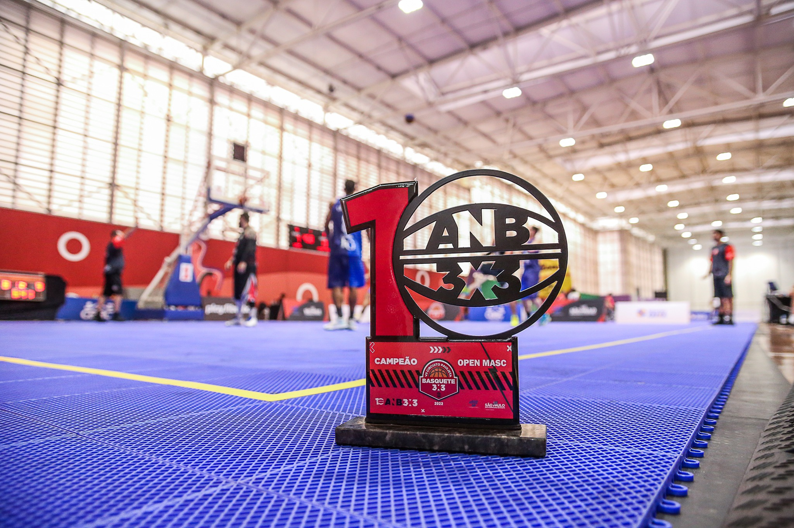
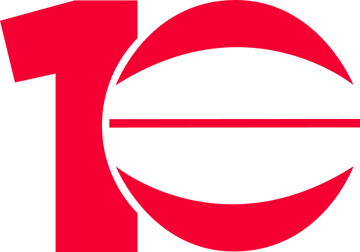
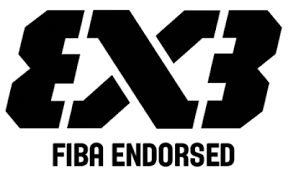

Nossa história
Nossa história começa em 2021, quando uma turma de jogadores de basquete decide se juntar para jogar basquete no Parque Linear de Sertãozinho-SP. Com o tempo, o time foi tomando corpo e decidiu se inscrever na liga ANB 3x3 em 2022.
Conseguimos ajuda financeira de alguns parceiros para fazer o uniforme e alguns itens de venda, porém arcamos com todos os custos da viagem, apenas pelo prazer de jogar
Em 2023 tentamos mais uma vez participar da liga, desta vez com a experiência de haver conseguido o 9º lugar geral em 2022.


